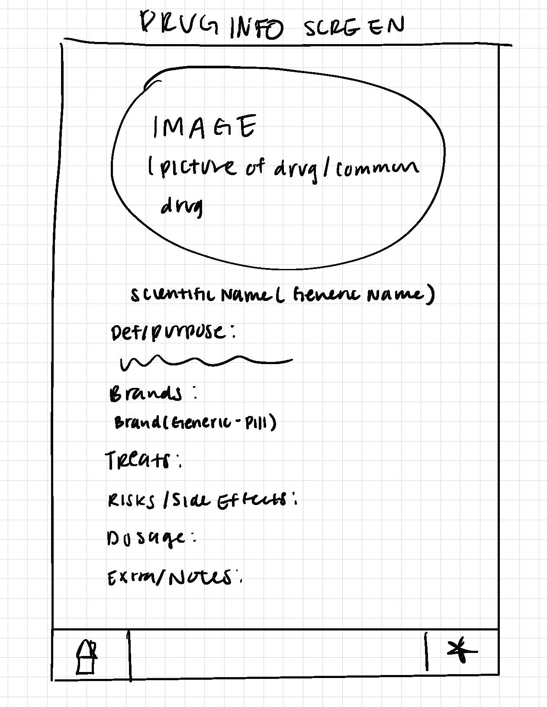
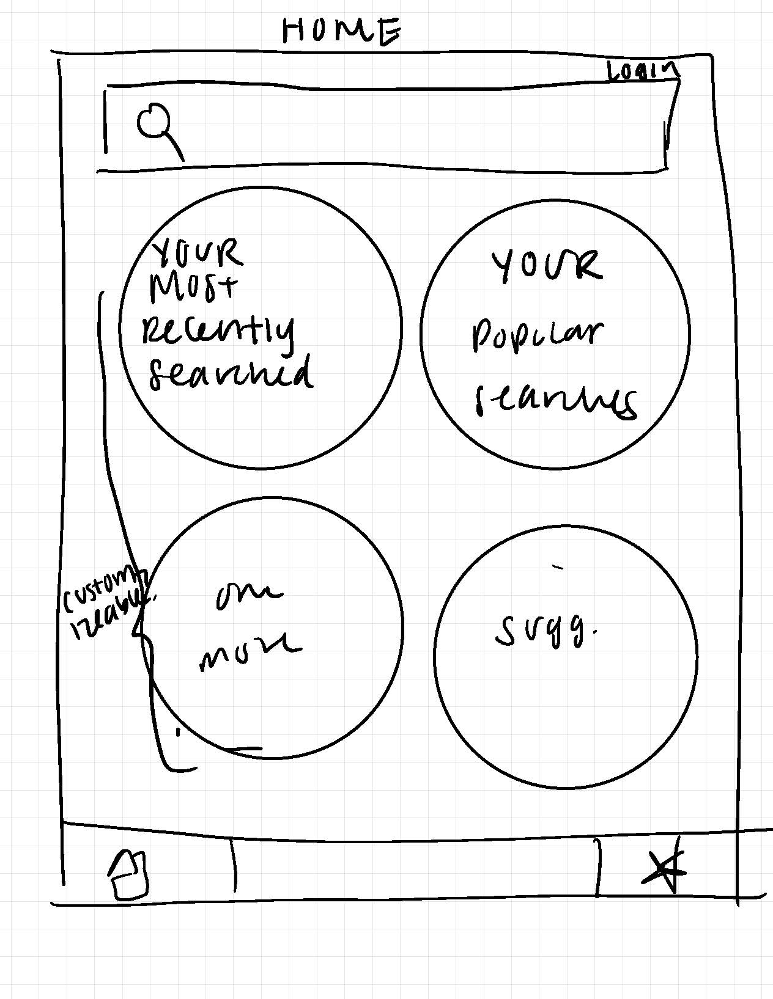
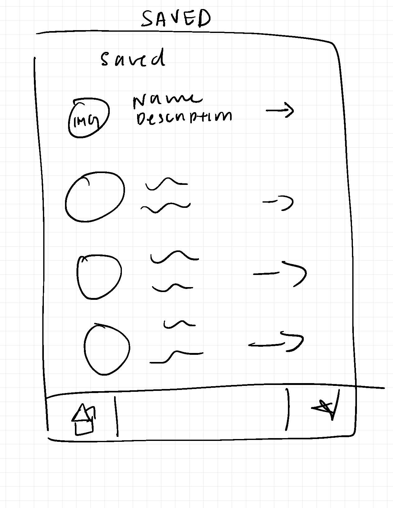
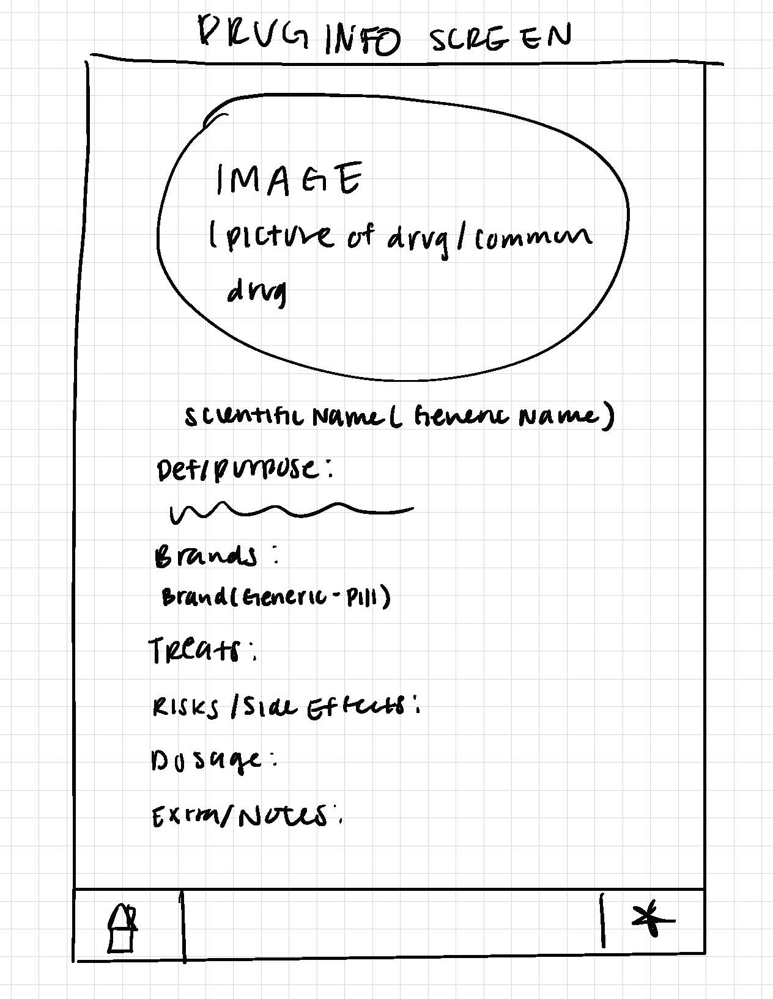
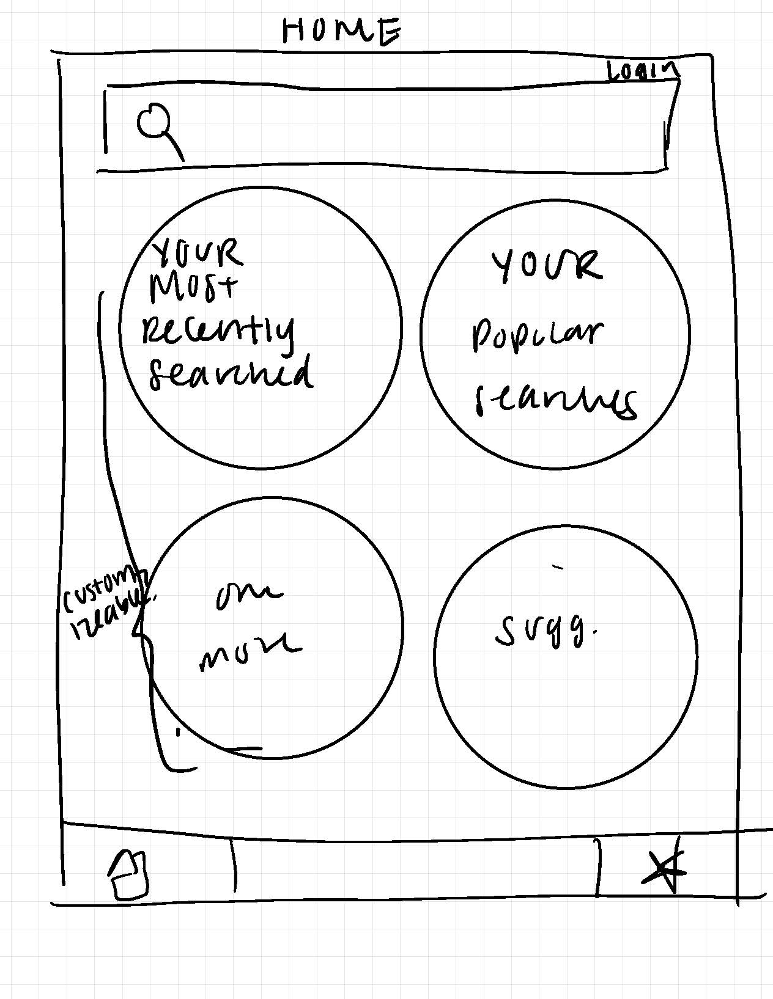
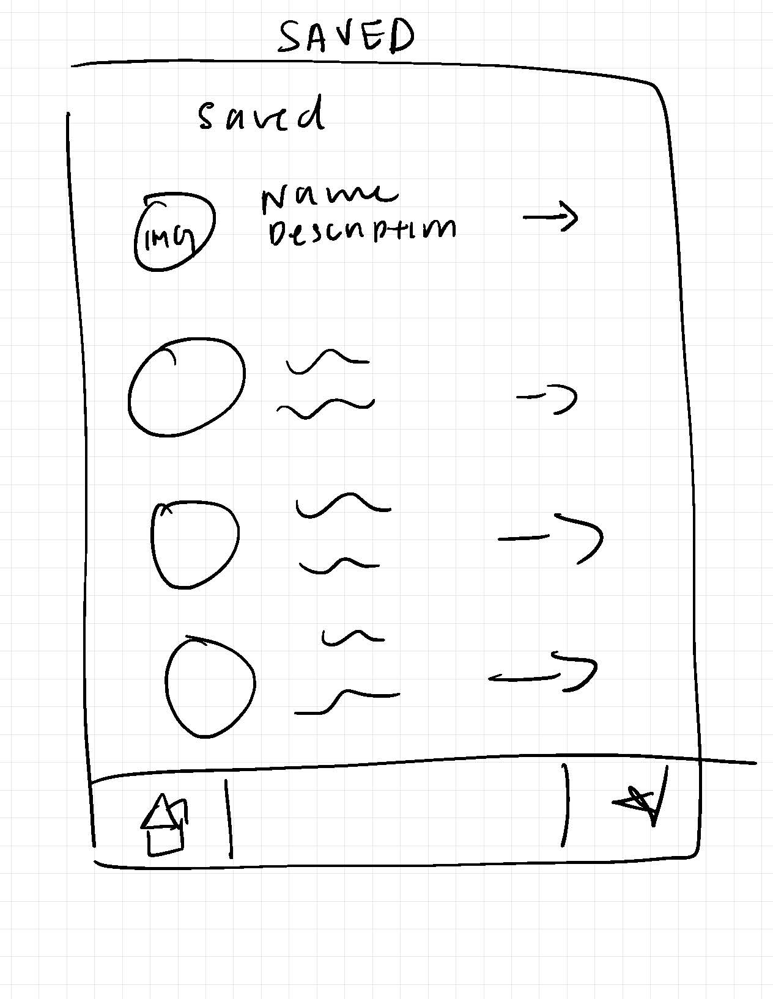

Overview
My group and I researched a startup and created mockups to encompass
the main goals to the startup's concept. We chose to research the
startup Pyrls, a website and mobile app that enables healthcare providers
and healthcare students to more effectively prescribe, dispense, and
educate patients on their prescriptions.
Our iterative design focuses
on the mobile application interface of the startup. Through our
design, industry healthcare providers will be able to search and find
information relating to drug prescriptions easily with this
application through a database. Healthcare students are able to use
the application as an educational tool to review information about
drugs, side effects, brands, and treatment information. In the process of creating
mockups, we used the iterative design process.
This included creating
sketches, lo-fi mockups, and a hi-fi mockup before undergoing a design
critique. At the design critique, we had the opportunity to meet with
an industry professional from Figma and received valuable feedback.
Based on this feedback, we improved our hi-fi mockups to create a
final version of our mockups. Finally, we used a remote user testing
service to test our mockups and analyzed the results.
Sketches
To begin, we started with ideation and sketching a few screens. The purpose here
was to come up with as many different ideas and designs as possible so that we could narrow down our ideas
and focus on the best designs for the app. When sketching, we made sure to encompass various screens and
features that we wanted to include in our app to diversify our designs.
Lo-Fi Wireframes
To transfer our sketches to more concrete ideas, we created lo-fi mockups on
Balsamic (pictured below). These mockups encompass and simplify the quick sketches we initially did into a
more concrete and standardized design.
Initial Figma Prototype
Based on our lo-fi designs, we created hi-fi designs on Figma. These designs
expanded on the lo-fi designs and added more detail to the interface, such as colors, fonts, and hierarchy.
We also created a style guide to help us keep our designs consistent.
Revised Figma Prototype
Based on the feedback we received from the design critique, we decided to revise
our high fidelity designs.
On the home page we added sections to view popular drug types and popular news. On the saved drugs page we
color coded the types of drugs and added a search bar for findability. We also changed the home icon to a
search icon, added back buttons to all the pages necessary for navigation purposes, and made the images of
the drugs larger. Lastly, we increased consistency of our app by consolidating the fonts and font sizes used
and checked that the use of pop ups and button spacing were consistent for all pages.
The new prototype can be found below.
User Testing and Analysis
Following the finalized Figma, we then conducted user testing for the
interactive prototype. To do so, we submitted our prototype to
usertesting.com, where we had to include a
scenario and subtasks for testers to complete. The scenario and subtasks
are as follows.
Scenario
Feel free to think aloud as you complete this exercise. For this
exercise, you will be testing an interactive mockup for a healthcare
startup company called Pyrls. Imagine that you are using the app as a
physician. You are looking to prescribe Ibuprofen (a type of
anti-inflammatory drug) to a patient. However, you don't remember all
the details about the drug. Luckily for you, you have taken notes about
Ibuprofen on our app. Use our app to find information about Ibuprofen,
including the notes you took on the drug.
Wiithout leaving the homepage, describe what you would select first to
accomplish the scenario. **Do not select anything yet.** If you would
leave without clicking anywhere, please explain why. (no success metric)
In order to update your notes, you need to find more information about
Ibuprofen. Describe and complete the process of finding more information
on Ibuprofen. (success metric)
Now that you found more notes on Ibuprofen, you realize you want to
update them. How would you update your notes? (success metric)
Now that you've seen some of what our app can do, in your own words,
describe what this app offers for physicians. Name at least 3 offerings.
(success metric)
We then asked the user to complete the subtasks and recorded their
responses. We received 3 responses from users. Their observations are
provided below.

Task 1:
- Clicked on anti-inflammatory drugs first on home page
Task 2:
-
Went to saved drugs page because the task mentioned that there
were already notes on the drug
Task 3:
-
Went to saved notes and clicked on the pencil but was a little
more difficult to complete the task
Task 4:
- Find information on prescription drugs
- Take personal notes on said prescription drugs
- Discover different brands of prescription drugs

Task 1:
- Clicked on anti-inflammatory drugs first on home page
Task 2:
-
Completed by navigating to ibuprofen page through the search
results on anti-inflammatory drugs category
Task 3:
-
Was able to navigate to update the notes on ibuprofen by
navigating to saved drugs
Task 4:
- Find information on drug treatments
- Update note on prescription drugs
- Quick and easy search for a prescription drug

Task 1:
- Clicked on anti-inflammatory drugs first on home page
Task 2:
-
Clicked on ibuprofen through anti-inflamatory drugs to find the
information
Task 3:
-
Found Saved button and would click the pencil to update notes
-
Prefers to have a notes section directly on Ibuprofen page
rather than in a separate saved page
Task 4:
- Offers an easy way to access drug information
- Write specific notes about drugs
- Explore news articles about related research
Analysis
All of the users successfully completed the four tasks they were tasked with. We tasked the users to find
information about Ibuprofen and update their notes. The subtasks for this scenario included noting where
users would click on the homepage, finding more information about Ibuprofen, and updating notes about
Ibuprofen. Generally, users' actions were in line with our expectations. We expected users to find
information about Ibuprofen through clicking the “Anti-inflamatory drug” category on the homepage or with
the search button and clicking into the Ibuprofen page. To update their notes, we expected them to go to the
saved drugs page through the navigation bar.
Additionally, as a final sub task, we wanted to gauge users' perspectives on different functions of the app.
All of the users were able to identify the functions that we intended for the app to have (including finding
drug information, seeing relevant articles, and taking notes on drugs).
Users noted the difficulty in finding the navigation bar, as at times, they were only able to access it by
scrolling to the bottom of the page. As a result, there was some confusion about where the user was on the
app. When creating this prototype, we didn’t expect this to happen as the navigation bar seemed to display
properly on the Figma prototype on our laptops. So, in future mockups, we would edit the navigation bar to
fix it relative to the bottom of the user’s screen. Finally, we noticed that each user had a different
perspective on how simple the app should be. Thus, in future mockups, we would also review our current pages
to ensure that all of them are necessary and contain necessary information.
Conclusion
Through this project, we learned about the iterative process that comes with
outlining and creating mockups. By taking user perspectives, we were able to make necessary updates to our
mockups and improve the experience of our app. The biggest changes we made from user feedback included
increasing user awareness of where they were in the app and creating more consistent stylistic choices. As a
result of these changes, we were able to update our high-fidelity mockup to a final version, ready for user
testing and to send to Pyrls for company feedback.
 




